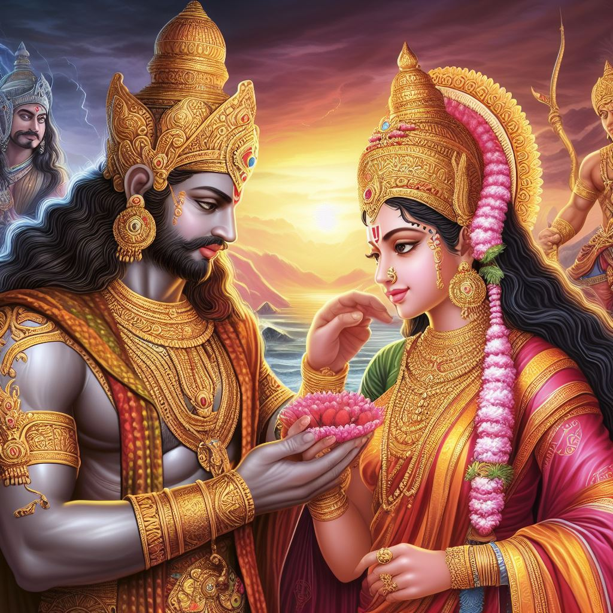
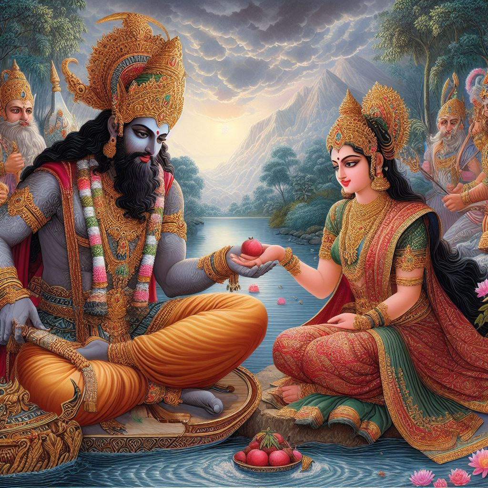

|  | Vikram comes again to catch Betal and Betal again gives Vikram a new weapon. This time Vikram starts listening to the story of a king and his general. tells the story. Prince Yashodhan of Kanakpur tells the king about his father's death. He becomes a very hard-working, honest and just king. One The merchant comes to him and presents two dancing girls to the king. When the king talks about doing something, he gets angry after listening to the businessman. That they will not make anyone their prey and the deceit with which the traders use those girls We also know that the businessman has come to give us tax waiver. Wants. The king frees those girls and also frees the merchant. Gives orders for completion. There was a merchant in the same state who had a lot of money. She was a beautiful daughter. That Seth was raising his daughter like a princess. If he goes to the king with the idea of marrying his daughter to the king, then The king sends two of his advisors to see Seth's daughter at his house. Both the servants are happy to see Seth's daughter and as soon as the king comes to her They were about to leave and on the way they met the same merchant and the two servants. It is said that if the king marries this beautiful girl then the kingdom will Who will care, the king will just spend time with that girl. Hearing this Both the servants tell the king everything wrong about Seth's daughter. Hearing that she is not beautiful and not even cultured, the king forbids this relationship. Does. Seth had to marry his daughter, so Seth He arranges the girl's relationship with the king's commander. Commander and Seth's Both the girls start meeting, one day Seth's daughter jumps on the commander's horse. When she talks about sitting, the commander asks her to ride the horse. Makes Por sit. |
|  | The horse takes Seth's daughter to the king where King Yashodhan Was inspecting the state border. The king was fascinated by that girl. He goes and tells his servants to find out the father of this girl. Want to make this girl his queen. Thoughts of Raja Seth's daughter Gets lost in. Both of the king's servants would tell the truth of everything the king said. Are. King Yashodhan listens to them and tells them that it is not possible that I I will get lost in the thoughts of my queen and will be distracted from my duty. King Sends the commander with advisors to that Seth's house to seek forgiveness from the Seth. Could ask for and talk about the king's relationship. commander and two advisors As soon as they reach Seth's house, the commander gets surprised and as if When he comes to know that the king likes his fiancee, then Senapati Seth and He breaks the relationship after meeting Seth's daughter because his first duty is He has to serve the king and can do anything for him. Seth his daughter Gets ready to marry the king. king to prepare for wedding Seems like The list of salaries and promotions of the army and servants as advisors is sent to the king. In which Sampati's name is at the top, then the king's advisors When asked the reason for this, both of them consulted and told the king how the commander broke her engagement for the king. After hearing Raj coming, he gets thinking. On the day of the wedding, the king gets Seth's daughter and the commander married. Betal Vikram Now tell me whose sacrifice is greater, the king's or the commander's. Of. Vikram tells Betal that sacrificing one's property is a great thing because He showed his loyalty to the king and sacrificed his love for the king. The king who became fascinated after seeing a girl gave that girl for the king. The commander left. Therefore the sacrifice of the commander is great. Vikram's answers As soon as it is given, the beetle flies again and goes to its place. |